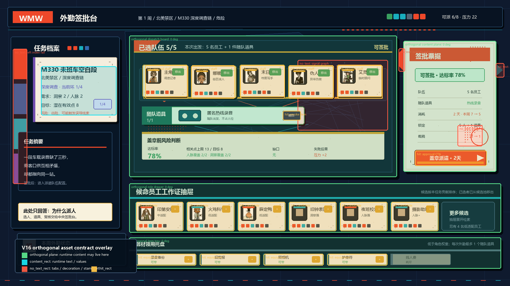
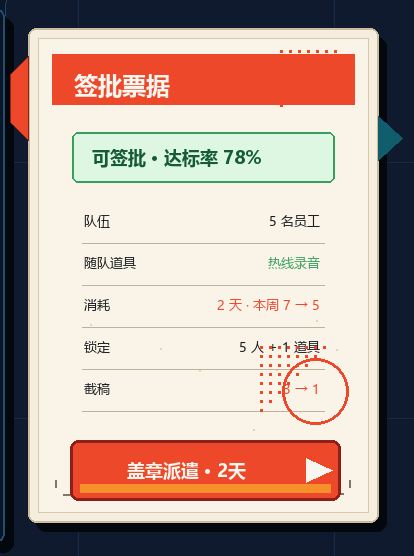

派遣签批台 V16 · 正交功能页合同稿
本页是 V15 后的返工验证：所有承载动态文字、数值、按钮文案和点击热区的功能页都必须为 0 度正交矩形。斜切、标签、半调、夹层和阴影只能作为 no_text 装饰层存在。
01 默认有字容量预览：右侧签批票据已方正。
02 候选抽屉 hover：展开不推动右侧签批票据。
03 无字底图草稿：文字层可独立叠加。

04 合同批注：绿色为正交功能承载面，红色为禁写装饰。

05 右侧签批票据 100% 裁切：检查方正、安全区和 CTA。